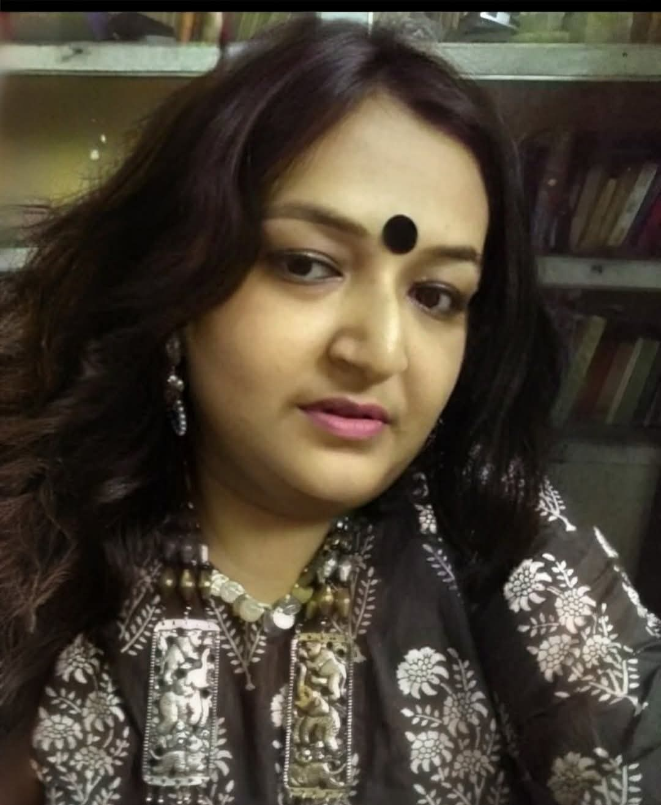

Our Faculty Members
Get to know the brilliant minds guiding our students toward a future in technology.
Our faculty combines deep academic knowledge with real-world experience.
Meet our dedicated team below.

Shri. Ujjal Kumar Das
Assistant Professor, M.Tech.
Contact: 8250341647
Email: ujjalmnnit@gmail.com

Smt Rupa Das Banerjee
State Aided College Teacher II, M.C.A.
Mrs. Snehadhanya Dutta
State Aided College Teacher II, M.Sc.
Contact: 8768434156
Email: dsnehadhanya@gmail.com
Mr. Ashraful Islam
State Aided College Teacher II, M.C.A.
Contact: 8926612351
Email: ashraful@srikrishnacollegebagula.ac.in
Mr. Barun Kumar Pal
State Aided College Teacher I, M.C.A.
Contact: 7501106583 / 7003942175
Email: b.barun91@gmail.com